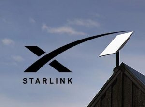
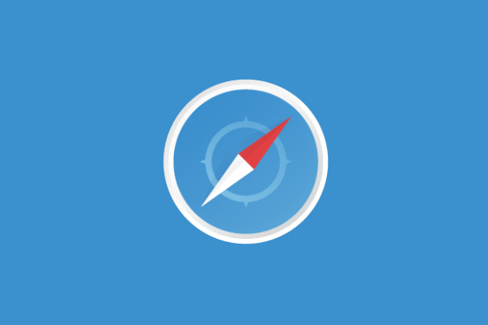

Internet Connectivity
1. Apa Itu Bisnis Internet Connectivity?
Bisnis internet connectivity adalah penyediaan layanan akses internet
kepada pelanggan, baik itu individu, bisnis, atau organisasi.
Perusahaan di bidang ini membangun, mengelola, dan mengoperasikan
infrastruktur yang memungkinkan pelanggan untuk terhubung ke internet.
Layanan ini dapat berupa koneksi internet tetap (broadband), nirkabel
(wireless), atau mobile (seluler).
2. Ada beberapa model bisnis yang umum digunakan dalam industri ini:
Internet Service Provider (ISP): Menyediakan akses internet
langsung kepada pelanggan melalui berbagai teknologi seperti fiber
optik, kabel, DSL, atau satelit.
- Wireless Internet Service
Provider (WISP): Menyediakan akses internet nirkabel kepada pelanggan,
biasanya melalui frekuensi radio atau teknologi point-to-point.
- Mobile Network Operator (MNO): Menyediakan akses internet
seluler melalui jaringan 3G, 4G, atau 5G.
- Wholesale Bandwidth
Provider: Menyediakan kapasitas bandwidth besar kepada ISP dan
operator lain yang kemudian mendistribusikan layanan kepada pelanggan
akhir.
3. Teknologi Apa saja yang Digunakan?
- Fiber Optik: Memberikan koneksi internet berkecepatan tinggi melalui
kabel serat optik, ideal untuk daerah perkotaan yang membutuhkan
bandwidth besar.
- DSL (Digital Subscriber Line): Menggunakan
kabel telepon untuk memberikan akses internet, biasanya lebih lambat
dibanding fiber optik, tetapi lebih terjangkau.
- Kabel
Koaksial: Menggunakan kabel TV untuk memberikan internet broadband,
menawarkan kecepatan menengah.
- *Satelit*: Digunakan untuk area
terpencil yang sulit dijangkau dengan infrastruktur kabel. Namun,
latensi lebih tinggi dibanding teknologi lainnya.
- Fixed
Wireless: Menggunakan transmisi gelombang radio untuk memberikan
konektivitas internet ke pelanggan tanpa kabel fisik.
- 5G &
LTE: Teknologi seluler generasi terbaru yang menyediakan akses
internet mobile dengan kecepatan tinggi dan latensi rendah.
4. Layanan Utama dalam Bisnis Internet Connectivity:
Internet Broadband: Koneksi internet tetap dengan kecepatan
tinggi yang biasanya digunakan di rumah atau kantor.
- Internet Mobile: Layanan internet berbasis jaringan seluler yang
dapat diakses melalui smartphone atau perangkat bergerak lainnya.
- Dedicated Internet Access (DIA): Koneksi internet yang
dikhususkan untuk bisnis dengan kebutuhan bandwidth tinggi dan jaminan
kualitas (SLA).
- Internet of Things (IoT) Connectivity: Layanan konektivitas khusus
untuk perangkat IoT yang memerlukan koneksi internet rendah daya dan
bandwith minimal.
- Cloud Connectivity: Koneksi internet yang
dioptimalkan untuk akses ke layanan cloud, seperti penyimpanan cloud
atau aplikasi SaaS.

Enterprise System
Apa Itu Enterprise System?
1. Enterprise System (ES) adalah solusi perangkat lunak yang
dirancang untuk mendukung operasi bisnis dan pengambilan keputusan
pada skala organisasi besar. Sistem ini mencakup berbagai fungsi
seperti manajemen sumber daya, akuntansi, logistik, SDM, produksi,
dan distribusi. ES bertujuan untuk mengintegrasikan semua aspek
operasional dalam satu platform agar proses bisnis menjadi lebih
efisien, terkontrol, dan terotomatisasi.
2. Jenis-jenis Enterprise System Tiga kategori utama dalam
enterprise system adalah:
- Enterprise Resource Planning (ERP): Sistem yang
mengintegrasikan semua fungsi inti perusahaan, seperti keuangan,
SDM, rantai pasokan, manajemen inventaris, dan produksi.
-
Customer Relationship Management (CRM): Sistem yang fokus pada
manajemen interaksi dengan pelanggan, termasuk penjualan, pemasaran,
dan layanan pelanggan.
- Supply Chain Management (SCM): Sistem
yang dirancang untuk mengelola hubungan perusahaan dengan pemasok,
termasuk pengadaan bahan baku, logistik, dan distribusi produk.